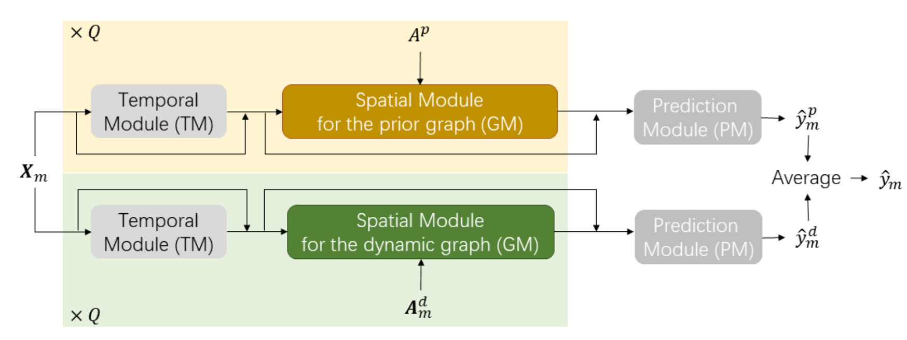
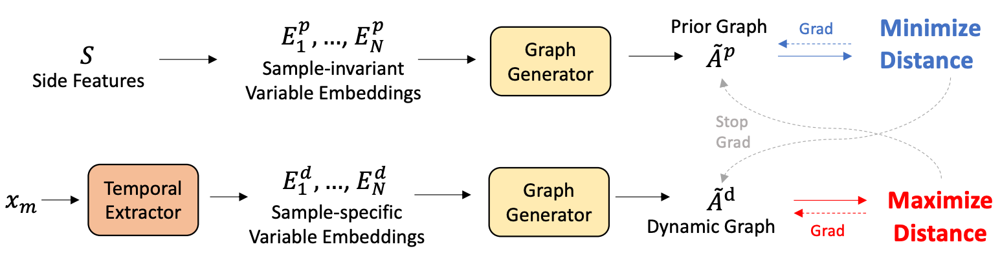

Learning Decomposed Spatial Relations for Multi-Variate Time-Series Modeling
Paper: PDF
Supplementary: PDF
Authors
- Yuchen Fang (Shanghai Jiao Tong University) arthur_fyc@sjtu.edu.cn
- Kan Ren (Microsoft Research) kan.ren@microsoft.com
- Caihua Shan (Microsoft Research) caihuashan@microsoft.com
- Yifei Shen (Microsoft Research) yshenaw@connect.ust.hk
- You Li (Central South University) youli.syvail@gmail.com
- Weinan Zhang (Shanghai Jiao Tong University) wnzhang@sjtu.edu.cn
- Yong Yu (Shanghai Jiao Tong University) yyu@apex.sjtu.edu.cn
- Dongsheng Li (Microsoft Research) dongshengli@fudan.edu.cn
Abstract
Modeling multi-variate time-series (MVTS) data is a long-standing research subject and has found wide applications. Recently, there is a surge of interest in modeling spatial relations between variables as graphs, i.e., first learning one static graph for each dataset and then exploiting the graph structure via graph neural networks. However, as spatial relations may differ substantially across samples, building one static graph for all the samples inherently limits flexibility and severely degrades the performance in practice. To address this issue, we propose a framework for fine-grained modeling and utilization of spatial correlation between variables. By analyzing the statistical properties of real-world datasets, a universal decomposition of spatial correlation graphs is first identified. Specifically, the hidden spatial relations can be decomposed into a prior part, which applies across all the samples, and a dynamic part, which varies between samples, and building different graphs is necessary to model these relations. To better coordinate the learning of the two relational graphs, we propose a min-max learning paradigm that not only regulates the common part of different dynamic graphs but also guarantees spatial distinguishability among samples. The experimental results show that our proposed model outperforms the state-of-the-art baseline methods on both time-series forecasting and time-series point prediction tasks.
 